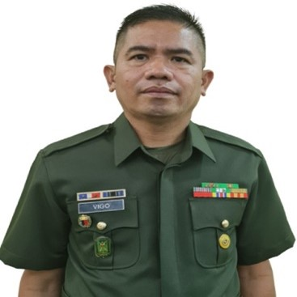

My Resume
Summary
Highly accomplished procurement specialist with over 12 years of expertise in Philippine Government procurement operations. Proficient in managing procurement projects, supervising personnel, and processing payments. Demonstrated success in assisting Commanding Officers and ensuring efficient project execution. Recognized for outstanding performance in military and professional training courses, with extensive knowledge in IT, networking, and hardware maintenance.
Education
- Bachelor of Science in Marine Engineering (Undergraduate)
- Colegio Dela Purisima Concepcion
- March 3, 1995
- Trainors Training Course
- Computer Hardware Servicing
- Cisco Certified Network Associate (CCNA) Exploration
- Network Fundamentals: October 6, 2012
- Routing Protocols & Concepts: November 8, 2012
- LAN Switching and Wireless: November 26, 2012
- Accessing the WAN: December 9, 2012
WORK EXPERIENCE
- Facilities Management, Mobility, and Admin NCO
- OG4, 3ID, PA - Jamindan, Capiz
- March 1, 2005, to February 20, 2009
- Assisted the Chief of Office in facilities management, mobility, and administration matters.
- Instructor
- TRADOC, PA - Camp O'Donnell, Capas, Tarlac
- May 16, 2009, to September 1, 2011
- Taught/instructed Philippine Army students on various PA subjects.
- First Sergeant and Contract Management NCO
- 103 Contracting Office, AFPPS - Jamindan, Capiz
- March 25, 2013, to June 16, 2016
- Supervised Enlisted Personnel on their daily tasks and monitored their morale and welfare.
- rocessed procurement projects from Unit Procurement Request until payment.
- First Sergeant and Payment NCO
- PAPC, AFPPS - Fort Bonifacio, Taguig City
- June 16, 2016, to December 1, 2023
- Supervised Enlisted Personnel on their daily tasks and monitored their morale and welfare.
- Monitored and processed payments, facilitated the opening of letters of credit, processed import permits, and handled liquidations.
SKILLS
- Philippine Government procurement processes
- Contract management and project execution
- Supervision of teams and personnel management
- IT skills including networking and hardware maintenance
- Payment processing, letters of credit, and liquidations
- Spreadsheet manipulation and online collaboration
AWARDS, CERTIFICATIONS, AND ACHIEVEMENTS
- Best Instructor
- Enlisted Personnel of the Year
- Certificates:
- Attendance on Finalization of APP - 2008
- Completion of Intro to RA 9184 AFP Proc Process & Documentation Sem - 2011
- PHILGEPS Training - 2011
- Computer Hardware Servicing NC II - 2012
- Completion of Cisco Certified Network Associate Course - 2012
- Attendance on Revenue Regulations - 2013
- Completion of Contract Management Seminar - 2013
My Hobbies
My Hobbie
Contact Me Here!
Contact